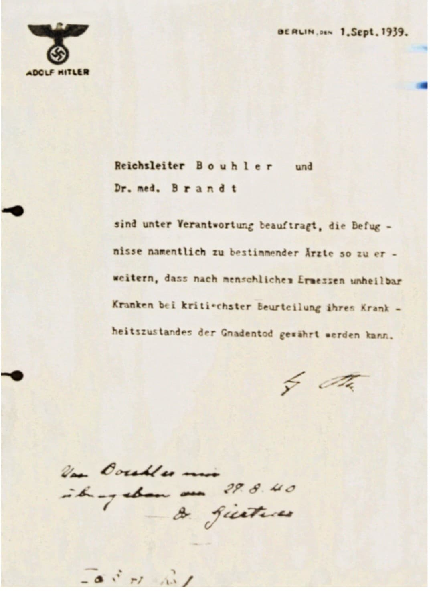
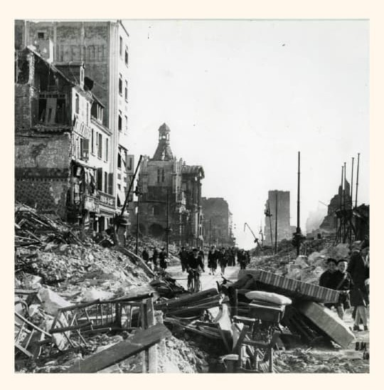
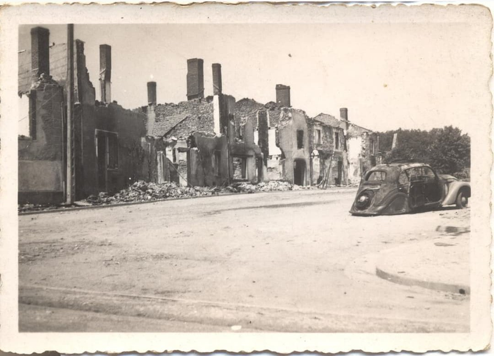
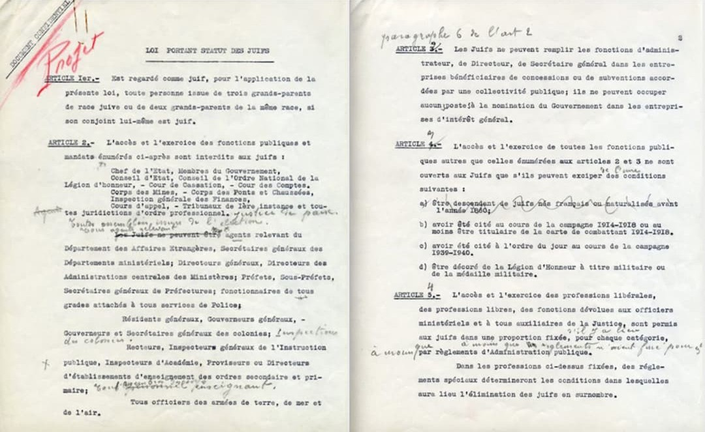
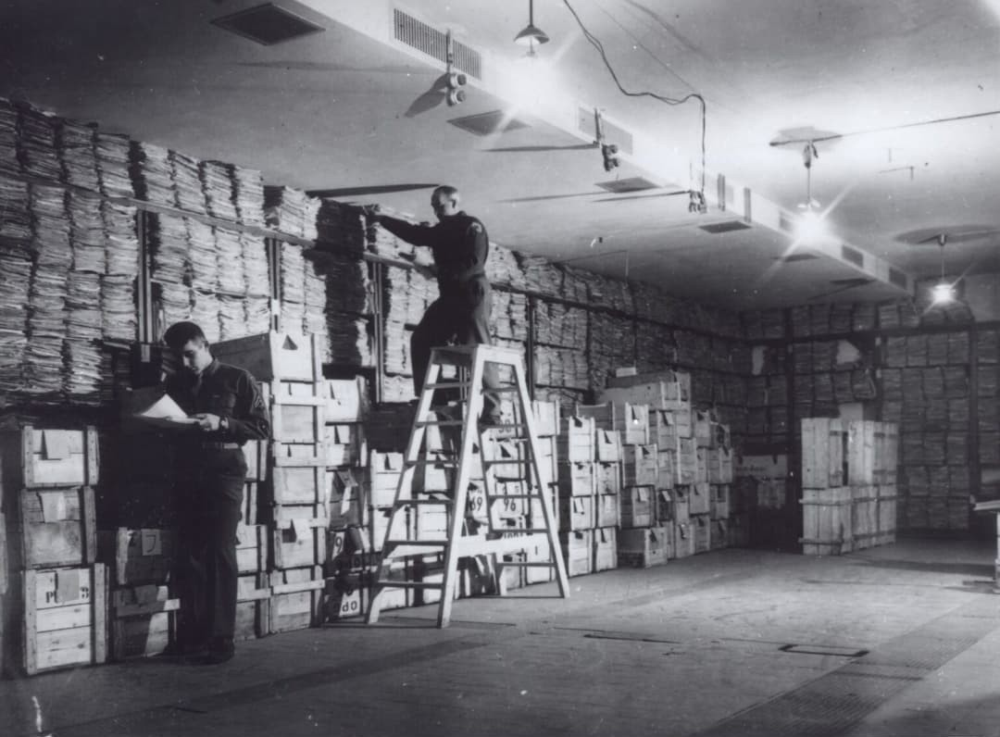
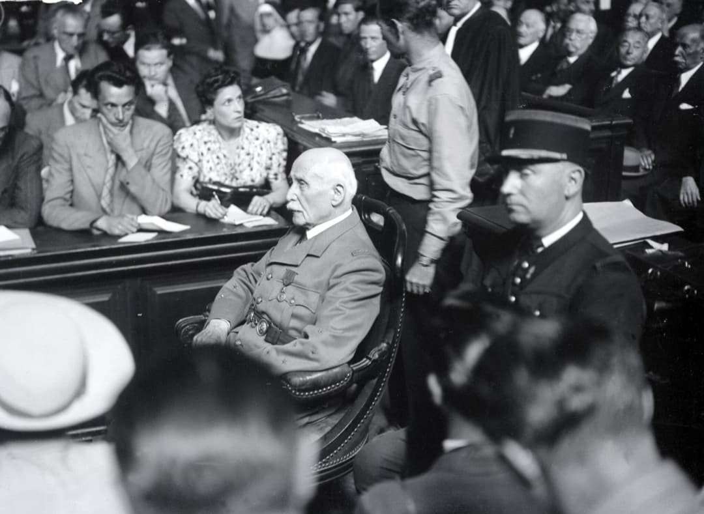
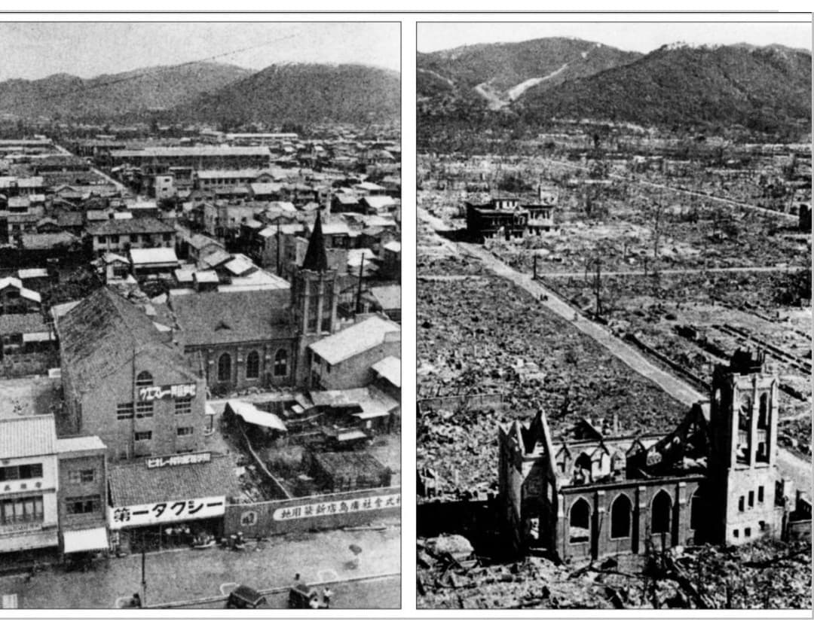
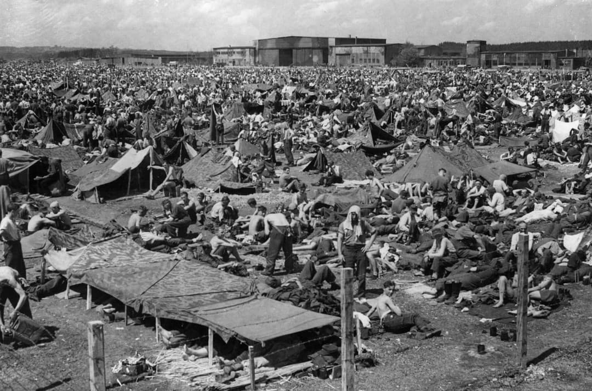

Introduction
La Seconde Guerre mondiale est marquée par des crimes de guerre commis par plusieurs régimes et armées. Ces crimes visent des civils, des prisonniers de guerre, des résistants et des populations entières.
Cette fiche adopte une approche muséale, neutre et respectueuse : elle explique clairement ce que chaque camp a fait, sans montrer les victimes ni des images choquantes.

Crimes de guerre nazis
Le régime nazi met en place une politique de terreur systématique dans les territoires occupés : massacres de civils, exécutions sommaires, déportations massives, mauvais traitements des prisonniers de guerre et destruction de villages.

Les dirigeants nazis sont jugés lors des procès de Nuremberg. Les accusés vivants dans le box illustrent la notion de responsabilité individuelle.

Ce document, signé et antidaté par Adolf Hitler au 1er septembre 1939, autorise personnellement le lancement du programme Aktion T4. Par cette lettre, Hitler donne à Karl Brandt (son médecin) et à Philipp Bouhler (chef de la chancellerie privée) le pouvoir d’étendre les prérogatives de certains médecins afin de décider, selon une évaluation jugée « rigoureuse », d’accorder une « mort miséricordieuse » aux personnes considérées comme incurables.
Ce texte n’est pas une loi ni un décret officiel : il s’agit d’une instruction extrajudiciaire, volontairement secrète, qui fonde administrativement le programme d’euthanasie forcée du régime nazi. Le document illustre la bureaucratie du crime : une décision écrite, datée, signée, transmise aux médecins pour légitimer l’action.

Les ruines de villes et villages témoignent de l’ampleur des destructions volontaires menées par les nazis pour punir les populations ou briser la résistance.

Les ruines d’Oradour-sur-Glane témoignent du massacre commis le 10 juin 1944 par la division SS Das Reich. Le village est encerclé, ses habitants exécutés, puis les bâtiments incendiés. Conservé en l’état depuis 1944, le site est devenu un lieu de mémoire national et un symbole des crimes nazis commis en France.
Crimes de guerre du régime de Vichy
Le régime de Vichy collabore avec l’Allemagne nazie : lois antisémites, rafles, déportations, répression contre résistants.

Vichy rédige ses propres lois antisémites et livre des milliers de personnes aux nazis.

Les archives révèlent la participation active de l’administration française : préfets, commissaires, fonctionnaires.

Après la Libération, la France juge les responsables : Pétain, Laval, Milice, policiers.
Crimes de guerre commis par les Alliés
Plusieurs actes graves sont reconnus : bombardements massifs de villes civiles, bombardements atomiques, mauvais traitements de prisonniers allemands.

Les bombardements de Dresde, Hambourg et Tokyo causent des destructions massives dans des zones civiles.

Les bombardements atomiques d’Hiroshima et Nagasaki restent l’un des sujets les plus débattus de l’histoire militaire.

Après la capitulation allemande, certains prisonniers sont détenus dans des camps improvisés comme les Rheinwiesenlager.
Conclusion
Cette fiche explique les crimes de guerre en se concentrant sur les responsables, les mécanismes, les lieux et la justice, sans exposer les victimes.